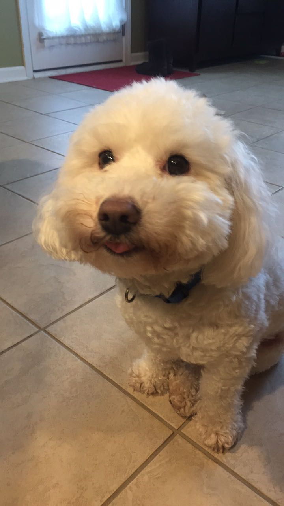
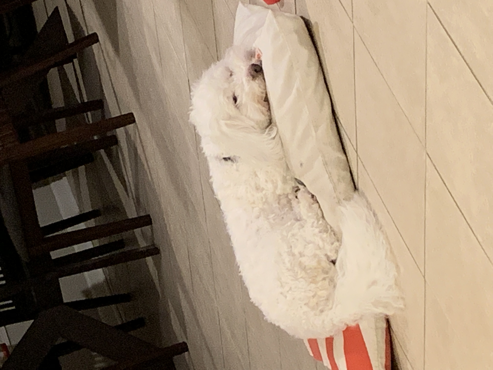
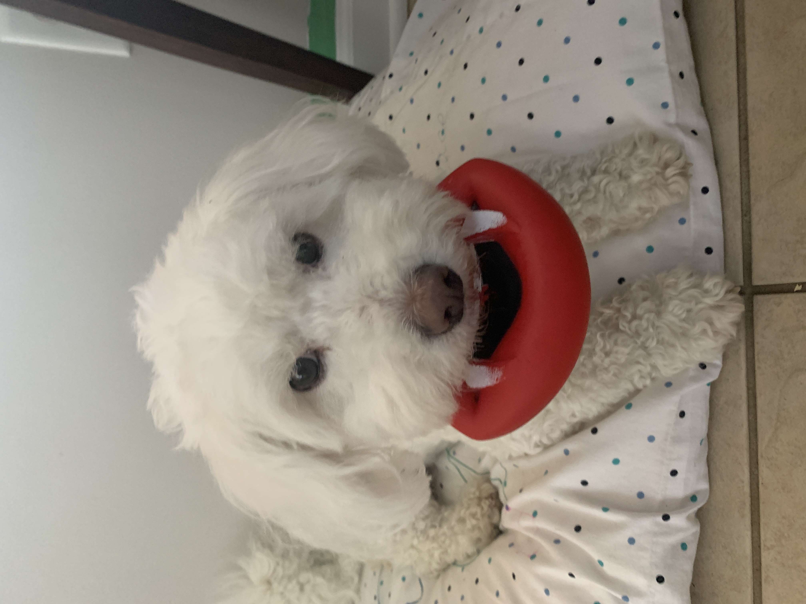
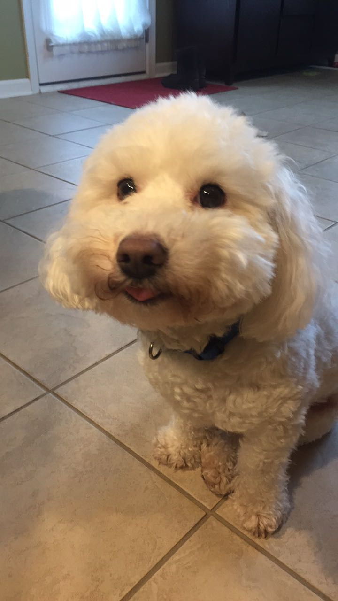
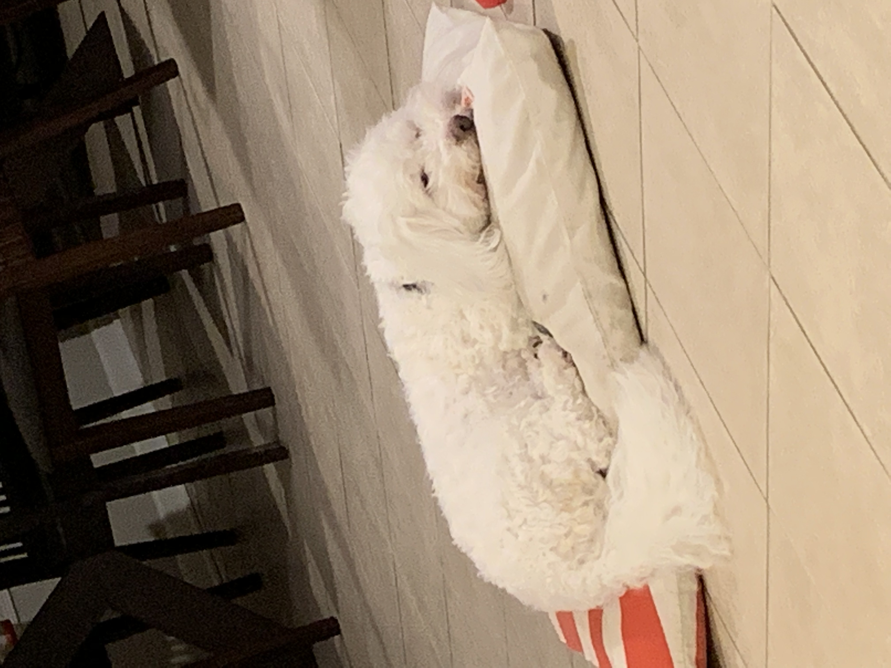
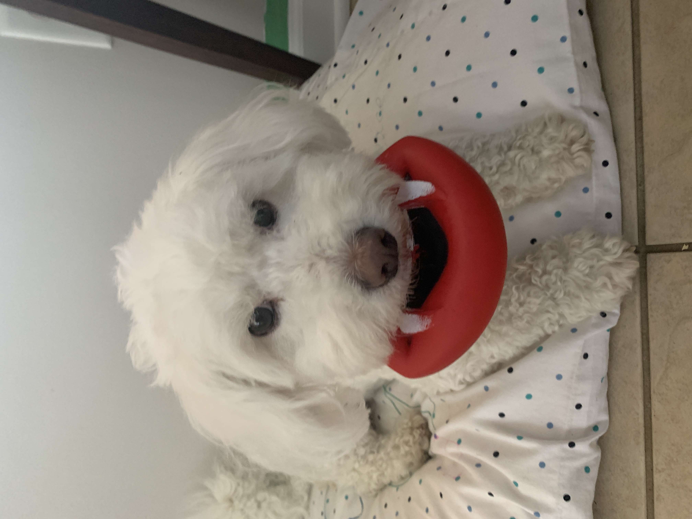

Bristol
Bristol was adopted when she was around 1 years old. She was found on the streets in downtown Rochester and may have been separated from her owner. When she hears the front door being opened, she immediately finds a toy and sprints out the door.
She loves to sleep by your feet while you're working from home and floating in the pool. She hates baths but will give in when she sees the treats being pulled out.
Likes
- Food
- Playing fetch
- Sleeping
Photo Gallery
 





Happy

Happy is an old cat. He spends a lot of his day lounging around, in whatever spot he feels is most comfortable at the time. He’s an indoor cat, but whenever we open the door to let the dogs out, he always comes running out so he can eat grass.
Happy is pretty friendly with one of my dogs, Katie. They don’t interact much, but when they do, it’s usually just friendly sniffs. My other dog, Izzy, however, loves biting at Happy. Happy usually will just run away, but sometime’s he’ll retalliate by giving Izzy a smack! It’s all in good fun though.
Likes
- Catnip
- Getting Pet
- Sleeping
Photo Gallery


Cooky

Cooky is an 11 month old Bernedoodle. He likes to play, run around, go on walks, eat snacks and treats (not his own dog food), get pets and belly rubs, and cuddle. You can usually find him playing with his toys in the living room, chilling in the office room with my dad, or cooling off in the garage.
He's still a baby, but he can get super hyper. Whenever someone rings the doorbell, Cooky gets really excited, barking and dashing towards the front door. He also jumps really high when he's hyper and wags his tail like crazy. Overall, though, he likes to chill and cuddle just as much as he likes to play.
Photo Gallery


Likes
- Dog cookies
- Pets and belly rubs
- Running around the house
Cheeto (Chicken)

Cheeto is a cat who likes to eat a lot and play a lot. He has an obsession with his grandpa (human) and tries to get outside every single day. If he isn’t causing problems, he is usually hiding in a seven foot tall cat tree and sleeping.
Another name for Cheeto is Chicken, because sometimes he sits very scrunched up and ends up looking like a rotisserie chicken. He was nicknamed this by one of his friends, and now he understands it as his own name. He is about six years old and still acts like a younger cat, despite being middle-aged.
Likes
- Treats
- Exploring
- My Dad
Photo Gallery


Leo

Guinea pigs are a naturally energetic animal, who spend up to 20 hours a day awake. Despite being awake for long periods of time, they naturally hide in their habitats, and can be difficult to see in their inclosures. Guinea pigs naturally are social creatures that enjoy socializing with other guinea pigs, in the wild they form packs of five to ten.
Leo is a half-lazy, half-lively guinea pig that either likes to run around on the floor, doing tiny hops, or likes to lay down in the cage for hours at a time nibbling at hay. His favorite hobby is eating, and he can tell whenever someone is about to give good to him by waiting at the end of the cardboard box patio he has attached to his cage.
Photo Gallery


Likes
- Lettuce
- Tiny hops
- Nap Time